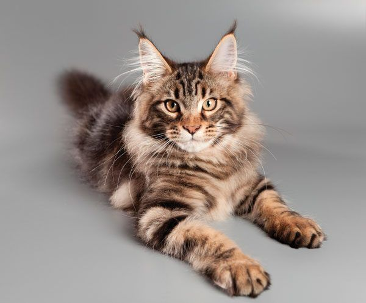
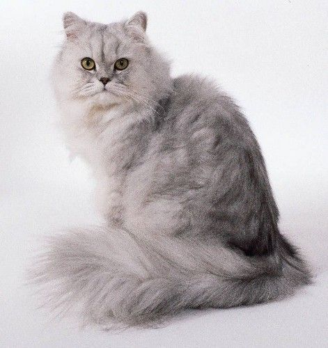
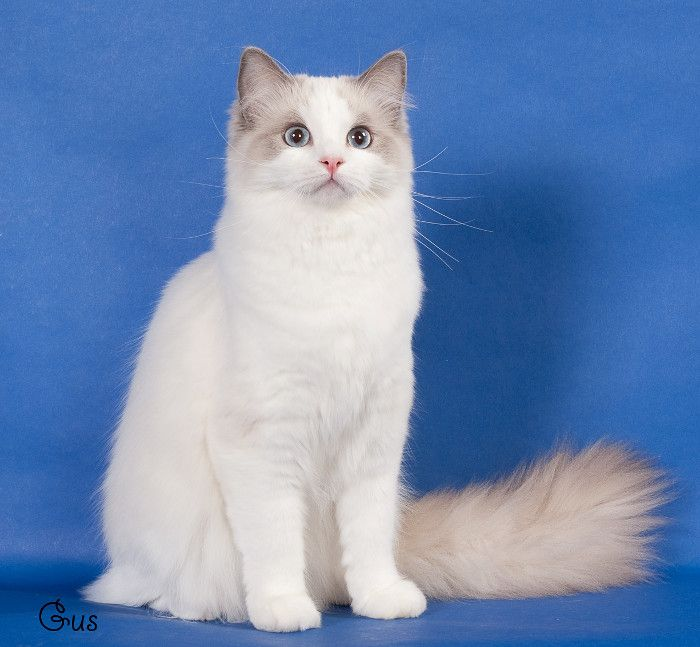
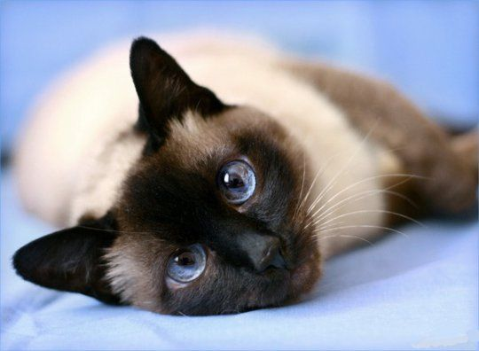
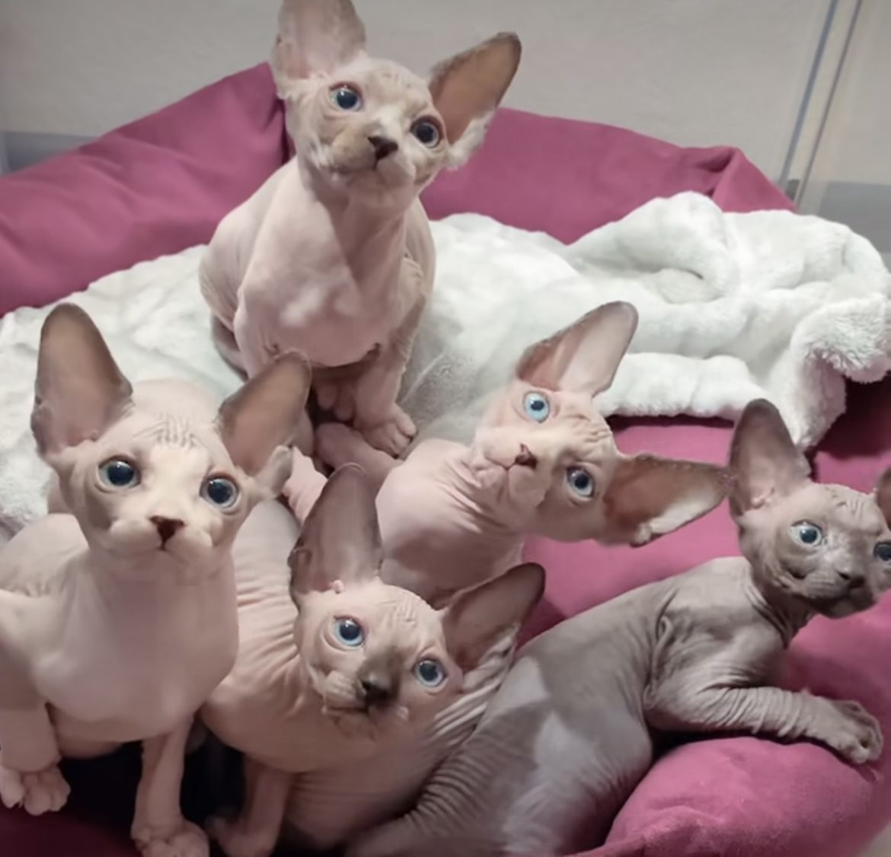

As diferentes raças de Gato:
- Maine Coon: Essa raça de gato é originária do nordeste dos Estados Unidos e chega a ser considerada como a raça de pelo mais antiga, além de ser a maior de todas as raças de gato no mundo! Seu nome, 'Maine Coon', vêm do estado norte-americano do Maine e foi reconhecida como uma raça oficial por conta se sua caácidade de caçar ratos e tolerar climas rigorosos.
- Persa: O gato Persa é um tipo de raça doméstica originária do Irã, antiga Pérsia (onde vem a origem de seu nome). Eles são conhecidos pela sua aparência chamativa, de muita pelagem e focinho achatado. O início de sua popularidade começou no século XVII, onde o explorador italiano Pietro Della Valle, durante uma de suas viagens pela Ásia, passou pela Pérsia onde se localiza o atual Irã e trouxe consigo alguns gatos que habitavam as ruas locais. No momento que Pietro retornou a Itália, os gatos imediatamente ganharam popularidade entre as pessoas por conta de sua pelagem macia e brilhante!
- Ragdoll: A origem do seu nome curioso nasceu por conta de ser uma raça 'mole' que nem uma 'Ragdoll', ou melhor traduzindo, 'boneca de pano', pois uma de suas características é simplesmente relaxar ao ser pegado no colo. Seu país de origem é Estados Unidos e é uma raça que foi desenvolvida mais especificadamente no estado da Califórnia durante a década de 1960.
- Siamês: Acredita-se que a origem desta linda raça seja o Sudoeste Asiático, mais especificadamente o Sião onde fica a atual Tailândia. Os Siameses eram tidos como gatos da realeza e eram mantidos em templos sagrados, já que era uma de várias raças nativas.
- Sphynx: Um dos gatos mais caros do mercado dos gatos, custando entre 3 até 50 mil reais, os Sphynx são uma raça de origem Canadense e são populares por não terem pelo. Embora pareçam aparentar serem uma raça delicada ou frágil, é na verdade uma raça robusta e forte se cuidada adequadamente. (OBS: A raça Sphynx foi a raça que inspirou o design do personagem Beerus de Dragon Ball!)
Maine Coon

Persa

Ragdoll

Siamês

Sphynx

Estas são algumas das raças que listei, porém existem INÚMERAS raças de gatos que existem no mundo inteiro.
Com isso, temos um vídeo a seguir falando sobre outras raças de gato (caso você queira saber mais a respeito):
Outras raças de gato:
Nomes para gato
Abaixo temos uma tabela de nomes para gatos (macho e fêmea):
| Nome para a gata (Fêmea) | Significado |
|---|---|
| Lucy | a luminosa e/ou a iluminada |
| Cindy | Deusa da Lua, Ártemis. Um nome cheio de presença e exerce força e pureza |
| Darkside | 'Lado negro' traduzindo para o português, um nome que combina com gatas pretas |
| Ágatha | Bondosa e/ou boa |
| Safira | Vem da pedra preciosa da cor azul. Remete a lealdade, sabedoria, confiança e beleza |
| Marrie | Referenciando o nome da gatinha branca com um laço rosa do filme 'Aristogatas' |
| Pepsi | O Refrigerante... por que sim. |
| Chanel | Somente para gatas chiques, referenciando a marca de moda francesa luxuosa Chanel |
| Malévola | Só bote esse nome na sua gata se ela realmente for má |
| Mao Mao | A sigla Māo (猫) em chinês significa 'gato' |
| Nome para o gato (Macho) | Significado |
| Cladaw | Certifique-se que o gato é macho antes disso. (experiência própria) |
| Alucard | Dracula ao contrário para gatos que amam morder seus donos |
| Astro | Para gatos que vivem em cima dos armários (e outras superfices aéreas) |
| Beerus | Só é válido em um gato Sphynx |
| Garfield | Referencia o gato gordo e laranja, Garfield |
| Capiroto | Se ele for o REAL Capiroto. |
| Satoru Gojo | Só é válido se o gato for branco e tiver olhos azuis (e de preferência ser o honrado) |
| Sundae | Para aquele gatinho que parece um verdadeiro sorvete de vários sabores |
| Noir | Preto em francês |
| Lucky | Sorte ou Sortudo em inglês |